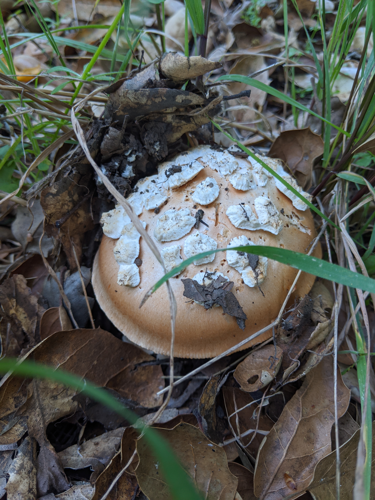

Morchella: True Morels
Description
A prized find, I think I might like these more than the truffles. Manali ke aas paas milti hai guchchi ki sabzi. Kya Guchchi ka taste morchella californica seh alag hai ? Abhi pata nahi. Inke texture meh hee sabse zyada maza hai. The trick is to slit them in half and ensure that it is hollow of course. Last time, I made them in a pasta.


Amanita Muscaria
Description
Polski ludzie mówi "mojomor" ? I need to verify the spelling. To fry or not to try remains to be found.

Shaggy manes
Description
The self-destructors. I recall Lake sent me an image of them growing in a park in Chicago. Easy to identify, they turn into black ink upon rotting and are no longer considered safe to consume after that point.

Amanita Velosa
Description
Only observed on that hill in California. A fond spring find.. sweet and nutty, albeit bug ridden. "More protein" is what they said. Need to be cautious about the likeness to amanita phalloides.
